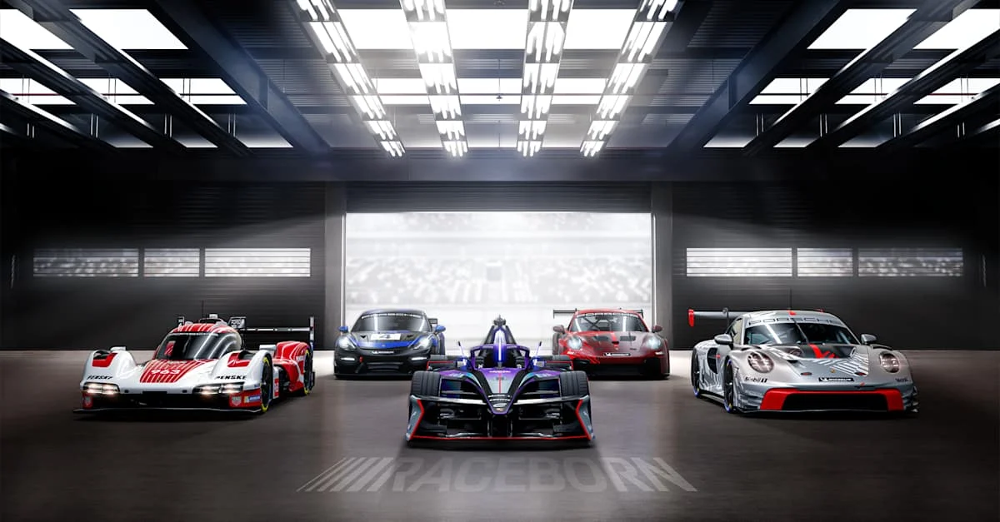
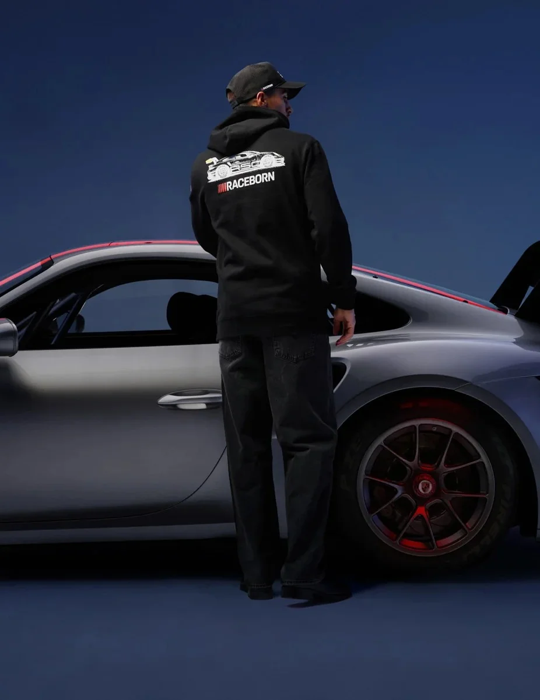

En 1948, el mundo del automovilismo cambió para siempre. Ante la frustración de no encontrar un auto deportivo que cumpliera con sus altas expectativas de ligereza, agilidad y rendimiento, Ferry Porsche tomó una decisión radical: diseñar y construir el coche de sus sueños con sus propias manos. Así nació el Porsche 356, el primer capítulo de una leyenda obsesionada con desafiar la física, dominar los circuitos de carreras y redefinir la ingeniería alemana en cada generación.


La historia de Porsche está ligada al asfalto de los circuitos bajo el lema de Porsche Motorsport, #Raceborn. Desde su legendaria victoria de clase en las 24 Horas de Le Mans en 1951, la marca ha utilizado la alta competición no como un escaparate publicitario, sino como el laboratorio tecnológico definitivo.
Con un récord imbatible de más de 30,000 victorias en diversas disciplinas —que van desde la resistencia extrema en Le Mans y las brutales dunas del Rally Dakar, hasta la precisión eléctrica de la Fórmula E—, cada innovación mecánica y de software es probada al límite en la pista antes de transferirse a los vehículos de producción en serie.